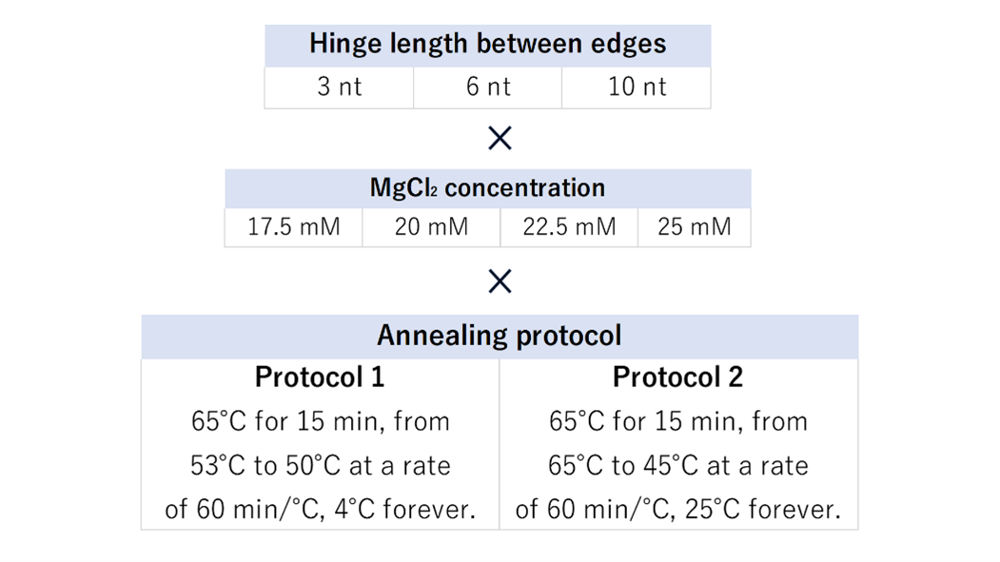
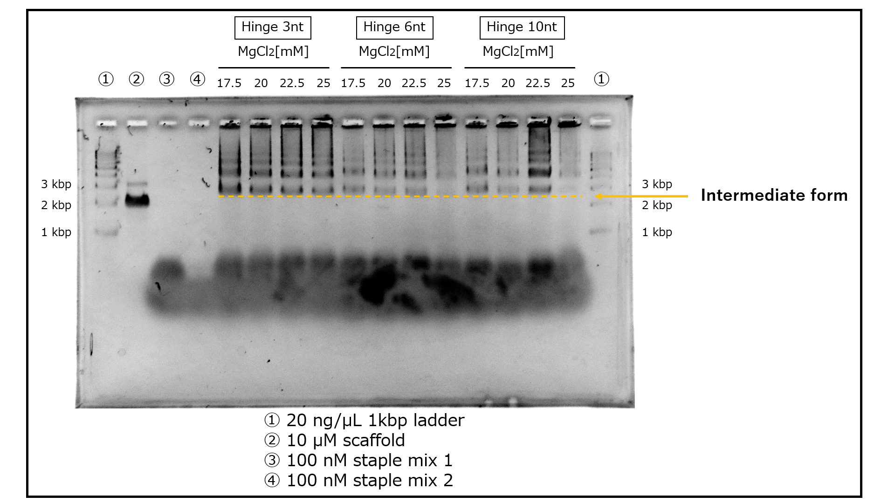
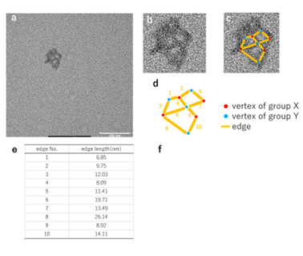
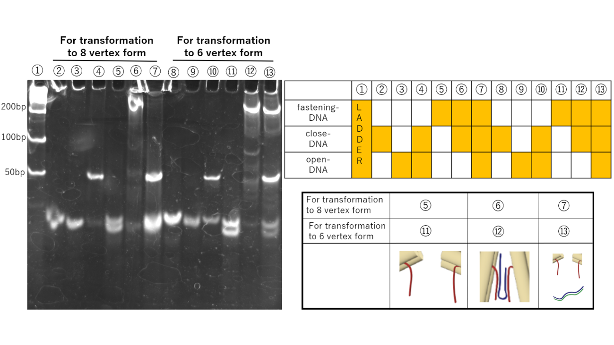
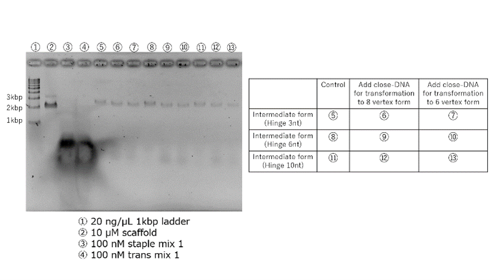
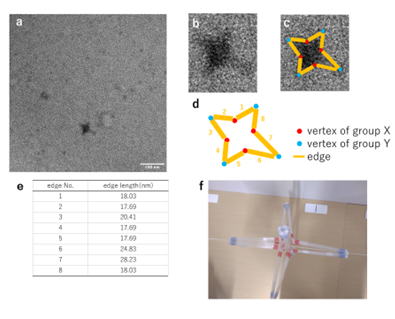
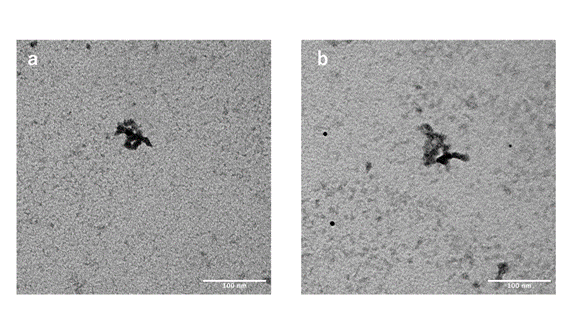

Result & Discussion
構造体形成条件の最適化
To create DNA origami structures, optimization of conditions is necessary. We sought the optimal conditions for the formation of the initial structure of Vertex-Switcher, which is the intermediate state. The conditions we examined include the length of hinges connecting the edges, MgCl2 concentration, and annealing protocol. Fig. 1 illustrates the patterns of each condition.
Fig.1 最適条件を探るために試すタイプ
When the hinge is short, the edge's mobility decreases, but when the hinge is long, structural stability is compromised. We experimented with three patterns, primarily focused on the minimum hinge length required to narrow the angle to 30° (SI Appendix, Section1-4). Mg+ ions neutralize the negative charges of DNA and contribute to structural formation. We tested four different concentrations based on previous research [1]. Two annealing protocols were examined, one following prior research [1] and another universal for 3D DNA origami [2]. We confirmed the products of all 24 patterns using agarose gel electrophoresis. In terms of the annealing protocol, since structures were successfully formed with either method, we determined that the annealing protocol derived from previous research [1] is more suitable. The results of annealing protocol 1 are presented in Fig. 2.
Fig.2 条件ごとの生成物をアガロースゲル電気泳動によって比較
The electrophoresis results bear similarities to previous research [1], suggesting the formation of intermediates. It is presumed that the intermediates are located near the 3 kbp region in each lane. Multiple bands situated above them are believed to be oligomers that formed during the intermediate's assembly process. Furthermore, bands below the 1 kbp mark are thought to result from the binding of mini-scaffolds (SI Appendix, Section 1-2) and staples to each other. In terms of band intensity, lanes with a 3 nt hinge exhibit denser bands, and lanes with a 22.5 mM MgCl2 concentration also show prominent bands.
Fig.3 アニーリングプロトコル1/ MgCl2濃度22.5mMで生成されたヒンジ3ntの構造体
Fig.4 アニーリングプロトコル１/ MgCl2濃度22.5mMで生成されたヒンジ10ntの構造体
An image containing three internal spaces was observed. The nearly straight alignment of Edges 4 and 9 indicates that the central vertex is of group X. The presence of X-shaped vertices at the center of the structure suggests that the structure adheres to the grid in a manner resembling Fig. 5-3. Additionally, the indistinct outlines of edges near the image's periphery suggest that edges may overlap during grid adhesion.鎖置換の実証
The transformation mechanism of the Vertex-Switcher involves altering the distance between the edges of the structure through chain replacement. Polyacrylamide gel electrophoresis was conducted using staples that are involved in chain replacement to demonstrate the occurrence of chain replacement. The electrophoresis results are shown in Fig.5.Vertex-Switcherの変形機構は、鎖置換によって構造体の辺間の距離を変えるというものである。Vertex-Switcherを構成するstapleのうち鎖置換に関わるものを用いてポリアクリルアミドゲル電気泳動を行ない、鎖置換が起きることを実証した。泳動結果をFig.5に示す。 
Fig.5 ポリアクリルアミドゲル電気泳動による鎖置換の実証
Chain replacement was observed in both the transformations between the intermediate and the 6-vertex structure, and between the intermediate and the 8-vertex structure. In samples with the addition of close-DNA, bands appear at higher positions due to the binding between close-DNA and fastening-DNA. Furthermore, in samples with the addition of open-DNA, bands corresponding to waste appear as close-DNA and open-DNA bind. However, in the chain replacement for the transformation between the intermediate and the 6-vertex structure, even with the addition of open-DNA, the bands at higher positions did not disappear. Therefore, it is suggested that the 6-vertex structure may have difficulty returning to the intermediate state.中間体から他状態への構造変化の確認
The Vertex-Switcher undergoes transformation by adding specific ssDNA to the intermediate state. The generation of the intermediate state was confirmed by TEM. Therefore, under similar conditions, we attempted to create the intermediate state once again and added close-DNA to explore the production of 6-vertex and 8-vertex structures. Intermediate states with hinge lengths of 3nt, 6nt, and 10nt were generated under Annealing Protocol 1 and a salt concentration of 22.5mM, followed by purification using gel excision. Gel excision was chosen for purification due to the low yield of purification via tangential flow filtration (SI Appendix, Section3-2). After purification via gel excision, close-DNA was added. The results of agarose gel electrophoresis for each sample are presented in Fig.6.Regarding the 10nt hinge, the position of the bands in the sample with added close-DNA has changed. Therefore, it is believed that structural changes are significant in the intermediate state with a 10nt hinge when close-DNA is added to this sample, and this sample was observed using TEM.

Fig.6 ヒンジ10ntの中間体構造から6頂点構造体への構造変化の確認
Fig.7 ヒンジ10ntの中間体構造から6頂点構造体への構造変化の確認
他状態から中間体への構造変化の確認
The Vertex-Switcher for 6-vertex and 8-vertex structures undergoes structural changes to an intermediate state by adding specific ssDNA. To verify the reversibility of these transformations, we conducted an operation to return the previously confirmed 6-vertex hinge 10nt structure to the intermediate state by adding open-DNA. The resulting structures from this operation were observed using TEM to confirm if the 6-vertex structure reverted to the intermediate state.
Fig.8 ヒンジ10ntの6頂点構造体のから中間体への構造変化の確認
We observed structures with edges and vertices. However, the observed images display structures distinct from those seen in Fig. 3-a and Fig. 4-a. Additionally, in both Fig.8-a and Fig.8-b, unlike the deformed 6-vertex structure in Fig. 7, there are gaps between the edges. Therefore, it is assumed that only some vertices have been opened by open-DNA. There are two conceivable reasons for this. Firstly, the non-uniform orientation of the toehold when close-DNA binds to fastening-DNA. Fastening-DNA is not uniformly designed due to several constraints (SI Appendix, Section1-3). Vertices with toeholds that act as footholds to remove close-DNA, oriented towards the outside of the structure, are more likely to open, whereas those oriented towards the inside of the structure are less likely to open. To resolve this issue, it may be necessary to reconsider the design of fastening-DNA and the 4 Helix Bundle. Secondly, the chains used for the transformation to the 6-vertex structure may not be completely removed. The results in Fig. 5 suggest the possibility that the chain replacement required for transforming to the 6-vertex structure may not have occurred in its entirety. Although we were unable to do so in this instance due to time constraints, comparing the samples that were transformed to the intermediate state with the 8-vertex structure could verify this hypothesis.